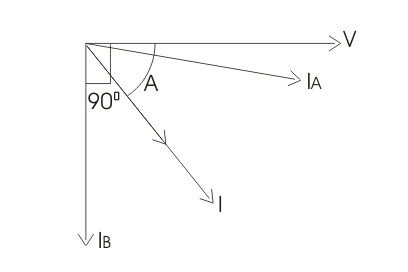

Advantages of Electrodynamic Type Power Factor Meters
Disadvantages of Electrodynamic Type Power Factor Meters
Before we introduce various types of power factor meters it is very essential to understand what are the needs of power factor meter? Why we do not directly calculate power factor in an a.c. circuit just by dividing the power with product of electric current and voltage as these readings can be easily obtained from wattmeter, ammeter and voltmeter. Obviously there various limitations of using this method as it may not provide high accuracy, also chances of increment of error is very high. Therefore this method is not adopted in industrial world. Measurement of power factor accurately is very essential everywhere. In power transmission system and distribution system we measure power factor at every station and electrical substation using these power factor meters. Power factor measurement provides us the knowledge of type of loads that we are using, helps in calculation of losses happening during the power transmission system and distribution. Hence we need a separate device for calculating the power factor accurately and more precisely.
General construction of any power factor meter circuit include two coils pressure coil and electric current coil. Pressure coil is connected across the circuit while electric current coil is connected such it can carry circuit electric current or a definite fraction of current, by measuring the phase difference between the voltage and electric current the electrical power factor can be calculated on suitable calibrated scale. Usually the pressure coil is splits into two parts namely inductive and non-inductive part or pure resistive part. There is no requirement of controlling system because at equilibrium there exist two opposite forces which balance the movement of pointer without any requirement of controlling force. Now there are two types of power factor meters-
(1) Electrodynamometer type and
(2) Moving iron type .
Let us study electrodynamometer type first.
Electrodynamometer Type Power Factor Meter
In electrodynamometer type power factor meter there are further two types on the basis of supply voltage
(1) Single phase
(2) Three phase.
The general circuit diagram of single phase electrodynamometer power factor meter is given below.
power factor meter" width="426" height="374" class="size-full wp-image-11131" /> Single Phase Power Factor Meter
Now the pressure coil is spitted into two parts one is purely inductive another is purely resistive as shown in the diagram by resistor and inductor. At present the reference plane is making an angle A with coil 1. And the angle between both the coils 1 and 2 is 90°. Thus the coil 2 is making an angle (90°+A) with the reference plane. Scale of the meter is properly calibrated shown the value values of cosine of angle A. Let us mark the electrical resistance connected to coil 1 be R and inductor connected to coil 2 be L. Now during measurement of power factor the values of R and L are adjusted such that R=wL so that both coils carry equal magnitude of current. Therefore the electric current passing through the coil 2 is lags by 90° with reference to electric current in coil 1 as coil 2 path is highly inductively in nature.
Let us derive an expression for deflecting torque for this power factor meter. Now there are two deflecting torques one is acting on the coil 1 and another is acting on the coil 2. The coil winding are arranged such that the two torques produced, are opposite to each other and therefore pointer will take a position where the two torques are equal. Let us write a mathematical expression for the deflecting torque for coil 1-
Where M is the maximum value of mutual inductance between the two coils,
B is the angular deflection of the plane of reference.
Now the mathematical expression for the deflecting torque for coil 2 is-
At equilibrium we have both the torque are equal thus on equating T1=T2 we have A=B. From here we can see that the deflection angle is the measure of phase angle of the given circuit. The phasor diagram is also shown for the circuit such that the electric current in the coil 1 is approximately at an angle of 90° to electric current in the coil 2.
power factor meter" width="408" height="272" class="aligncenter size-full wp-image-11109" />
Given below are some of the advantages and disadvantages of use electrodynamic type pwer factor meters.
Advantages of Electrodynamic Type Power Factor Meters
(1) Losses are less because of minimum use of iron parts and also give less error over a small range of frequency as compared to moving iron type instruments.
(2) They high torque is to weight ratio.
Disadvantages of Electrodynamic Type Power Factor Meters
(1) Working forces are small as compared to moving iron type instruments.
(2) Scale is not extended over 360°.
(3) Calibration of electrodynamometer type instruments are highly affected by the changing the supply voltage frequency.
(4) They are quite costly as compared to other instruments.
 by
by